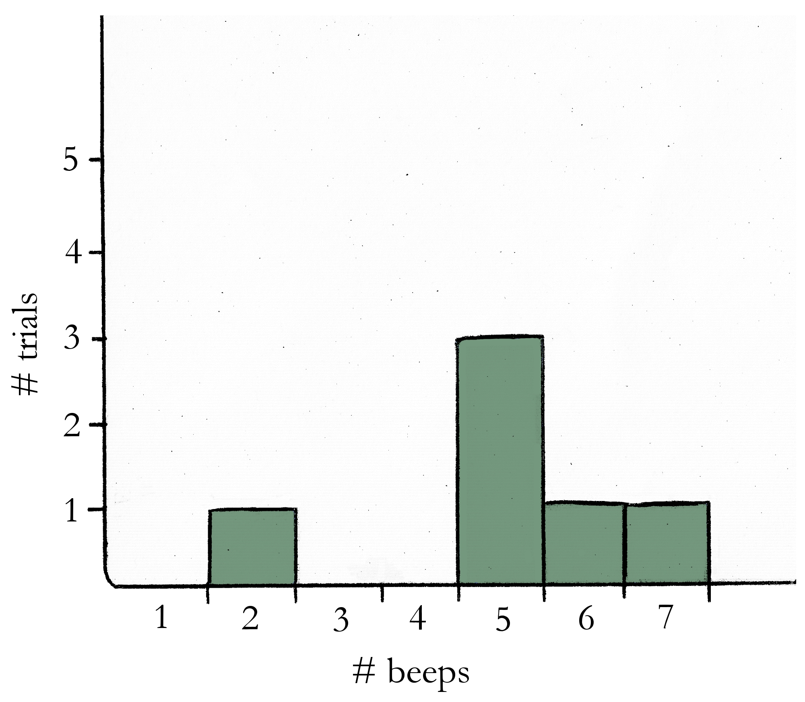

Quarantined mathematics
[1] Envelope’s response histogram
Here’s an example. Pretend the results from Experiment 1 looked like this:
- Trial 1: 5 beeps
- Trial 2: 6 beeps
- Trial 3: 7 beeps
- Trial 4: 5 beeps
- Trial 5: 5 beeps
- Trial 6: 2 beeps
A histogram shows how often each response beep count happened, across all of your trials. The response “5 beeps,” for example, happened in different three trials, while the responses “6 beeps,” “7 beeps,” and “2 beeps” each occurred only once. The histogram, then, would look like this:

A histogram is a way of displaying experiment results in a way that makes it clear which responses were the most common. In this example, it’s now easy to see that 5 beeps was the most common response in the experiment, followed by 2 beeps, 6 beeps, and 7 beeps.
[2] Envelope’s tuning curve for broccoli size
Let me explain what I mean. I started out by looking at all the responses from trials where the stimulus size was a 1 inch piece of broccoli, taking the average beep count of all those trials, and then plotting that new average value on the graph.
(For example, pretend that when I showed Envelope the 1 inch broccoli these were the beep counts I recorded: 5, 8, 9, 12, 8, 6. Then the average beep count for 1 inch broccoli is the average of those values: (5+8+9+12+8+6)/6 = 48/6 = 8 beeps per second.)
After that, I fit a line (or, a “curve”) to the average beep responses—that line is the tuning curve.
In Envelope’s case the tuning curve is just a straight line, but in general a Neuron might need a more complicated curve to describe his average beep responses. I recommend befriending only Neurons with linear tuning curves if possible, just because their beeps will be a bit easier to predict without the aid of a calculator.
[3] Finding the best criterion
An example will make this clearer. Pretend that at the end of Experiment 3, these were Harry’s beep responses that I recorded:
- blue stimuli: 12 beeps, 10 beeps, 11 beeps, 11 beeps, 6 beeps
- not-blue stimuli: 5 beeps, 13 beeps, 12 beeps, 6 beeps, 6 beeps
To explain the calculation of the various rates, I’ll pick a criterion of 8 beeps and see how many trials I would guess right. If a trial has 8 beeps or more I’ll guess the stimulus was blue, and if it has less than that I’ll guess not-blue.
These would be my guess classifications for the responses above:
- blue stimuli: H, H, H, H, M
- not-blue stimuli: CR, FA, FA, CR, CR
So I had 4 hits (H), 1 miss (M), 3 correct rejections (CR), and 2 false alarms (FA). Now I can calculate the following rates:
- hit rate = H/(H+M) = 4/(4+1) = 4/5 = 0.8
- correct rejection rate = CR/(FA+CR) = 3/(2+3) = 3/5 = 0.6
- false alarm rate = FA/(FA+CR) = 2/(2+3) = 2/5 = 0.4
- miss rate = M/(H+M) = 1/(4+1) = 1/5 = 0.2
- accuracy rate = (H+CR)/(H+CR+FA+M) = (4+3)/(4+3+2+1) = 7/10 = 0.7
- incorrect rate = (FA+M)/(H+CR+FA+M) = (2+1)/(4+3+2+1) = 3/10 = 0.3
In the example above, the criterion of 8 beeps gave me an accuracy rate of 0.7, or 70%. If I wanted to maximize my accuracy rate I would do these calculations for each criterion (0 beeps, 1 beep, …) and just look for the criterion that had the highest accuracy rate.
[4] ROC curve
A Neuron allowing perfect discrimination of the stimulus will yield an ROC plot with an area under the curve of 1.0, while the worst Neuron possible (that is, a Neuron who is no more useful than a coin flip) will yield an area under the curve of 0.5. It took me quite a while to understand the powers of this mysterious graph.
Eventually, though, it occurred to me that no matter what Neuron you use, a criterion of 0 beeps will always yield a hit rate of 1.0 and a false alarm rate of 1.0. Similarly, at the very highest criterion the hit rate will always be 0.0 and the false alarm rate will be 0.0. This means that every ROC curve imaginable must have points at (0.0, 0.0) and at (1.0, 1.0). Consequently, the smallest area under an ROC curve is 0.5.
But why is the largest area possible 1.0? I tried to imagine what the ROC curve would look like for the sort of perfect Neuron I mentioned at the end of Experiment 3—a Neuron whose responses to the two sorts of stimuli would have no overlapping region. If this Neuron was really a perfect discriminator there’d be a criterion giving me a hit rate of 1.0 and a false alarm rate of 0.0. The ROC for this perfect Neuron, then, would have a point at (0.0, 1.0) as well as the points at (0.0, 0.0) and (1.0, 1.0). The ROC curve in this case would be a square—that is, a square with an area of 1!
This section’s lack of clarity is perhaps the best evidence that the author fell short on his intention that this guide be aimed at a Neuron owner who is ignorant of mathematics. However, for those frustrated by the author’s vagueness, a clarification of the author’s methods for calculating discrimination is in order. Rather than attempting a clearer mathematical explanation of the author’s methods myself, however, I’d prefer to recommend the reader to the professionals:
- For a more detailed mathematical explanation of the author’s use of the ROC curve in general, the author is referred to Basic principles of ROC analysis [Metz CE, 1978].
- For clearer instructions regarding finding the area under a curve, the famous Chilean botanist Lornwylder has written a very readable classic on the subject, called The Ultimate AUC: How I Found the Area Under All My Curves and Learned to Like It [2015].
-WT